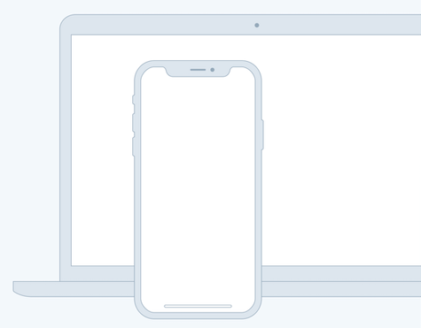

Source helps creators do more of what they love
A device that enables collaboration will lessen the chance of work having to be completely redone.

A device that enables collaboration will lessen the chance of work having to be completely redone.